Pick a whole theme — each one is a complete identity (style + icons + mascot + trophy), not a mix-and-match. Tell Muse which you like, e.g. "Theme A, layout 1", and he'll apply it to the site.
Cozy and playful — soft watercolor art, chunky sticker icons, cream-paper warmth. Friendly like a children's book.
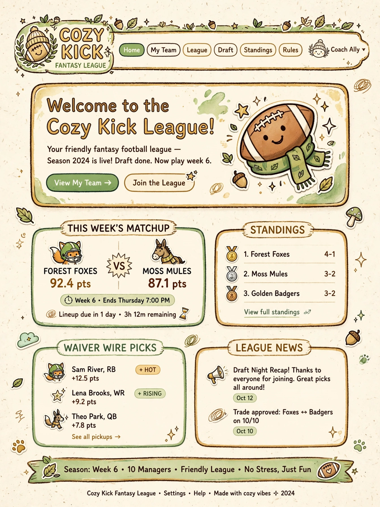
The overall look: cream paper, hand-drawn warmth, rounded friendly cards.
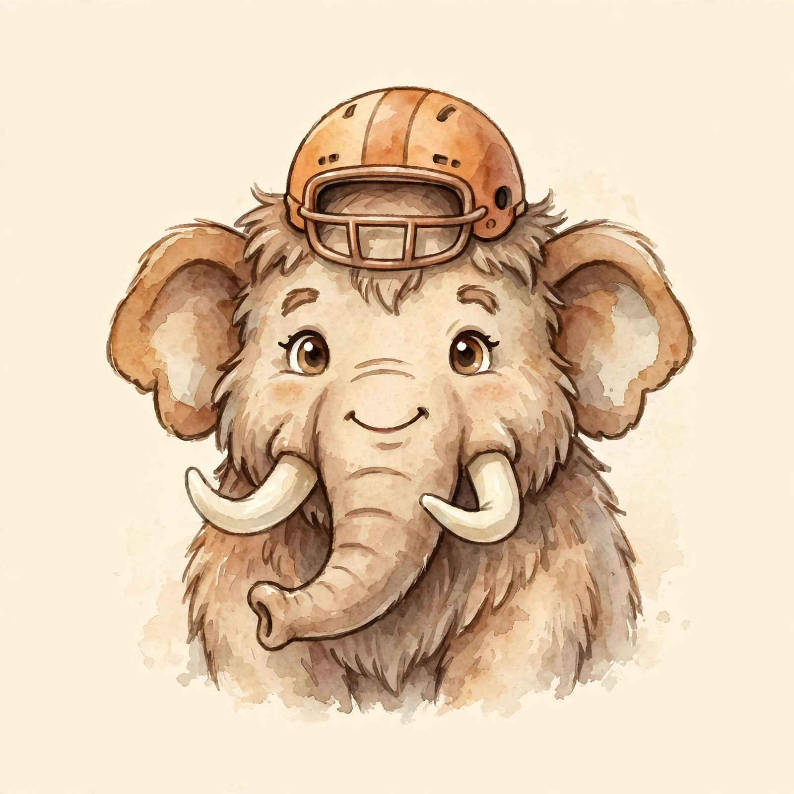
Team mascot style: soft watercolor storybook mammoth (shown: Sammoth.ai — every team would get its own).
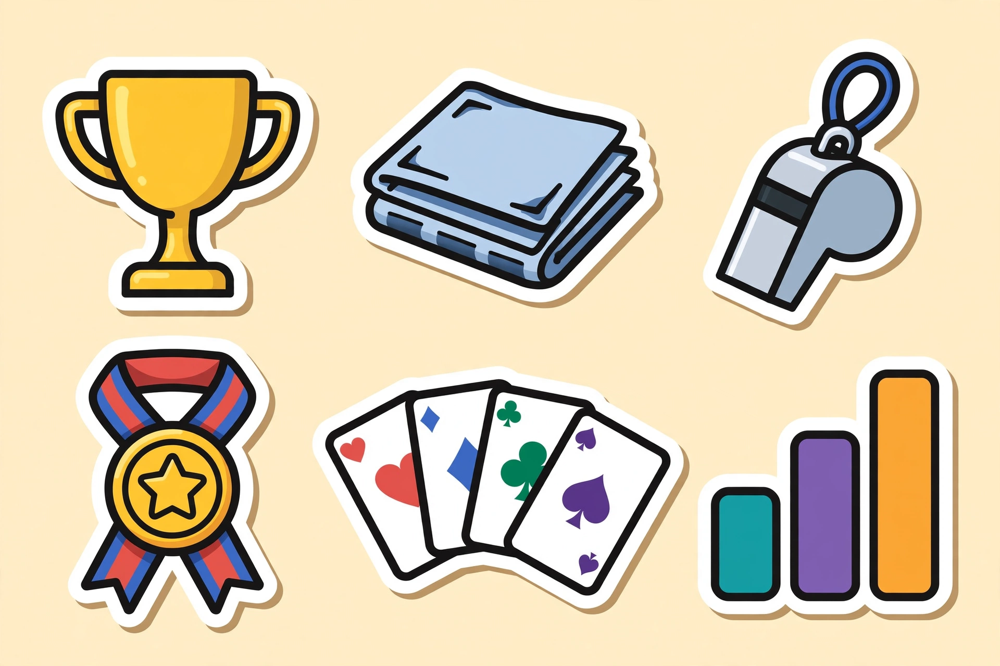
Icon set: chunky die-cut stickers — trophy, newsletter, whistle, medal, draft cards, standings chart.
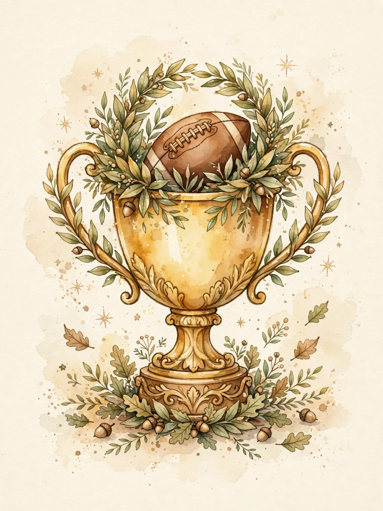
Championship trophy: golden watercolor trophy with laurel wreath.
Crisp and minimal — bold flat vector shapes, lots of whitespace, one strong accent color. Sharp and professional.
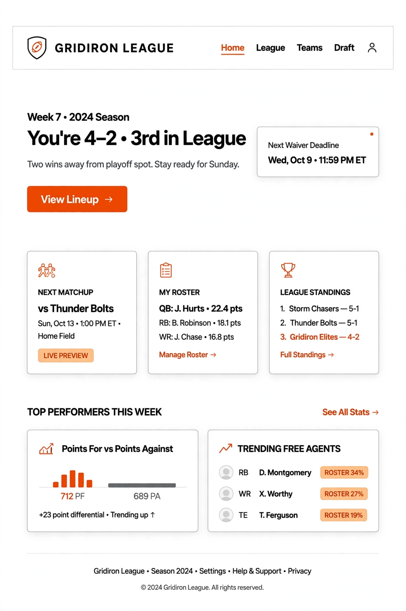
The overall look: white space, sharp black type, single bold accent, minimal cards.
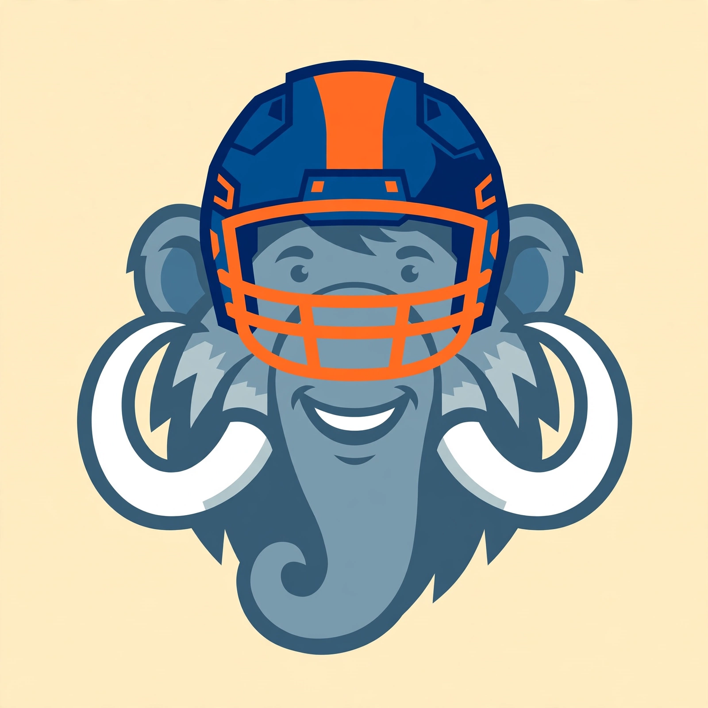
Team mascot style: bold flat vector mammoth, logo-like and geometric.
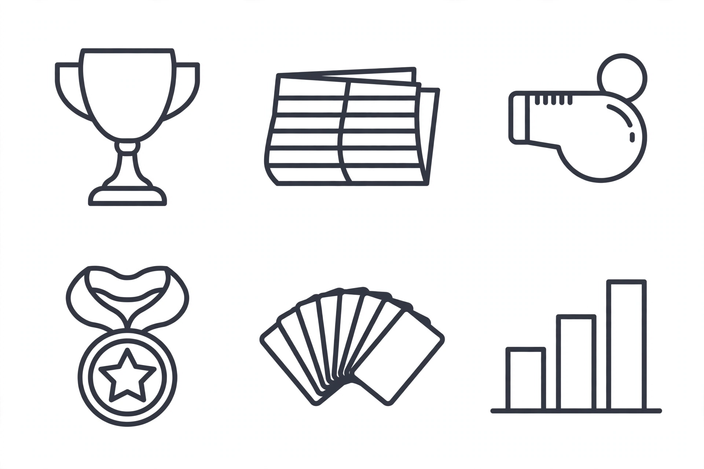
Icon set: thin elegant line icons — trophy, newsletter, whistle, medal, draft cards, standings chart.
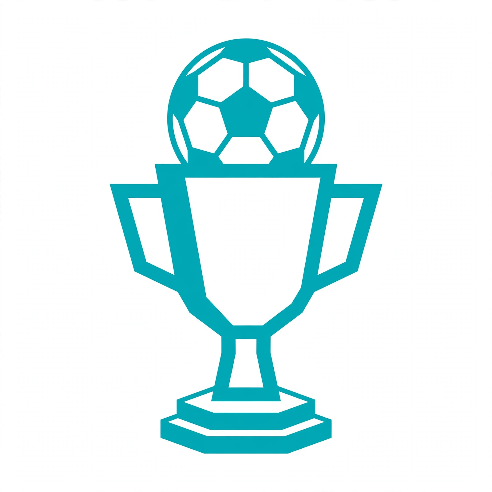
Championship trophy: simple geometric trophy, crisp and iconic.
Nostalgic and loud — 1970s sports-poster art, halftone shading, navy/red/cream. Old-school Americana.
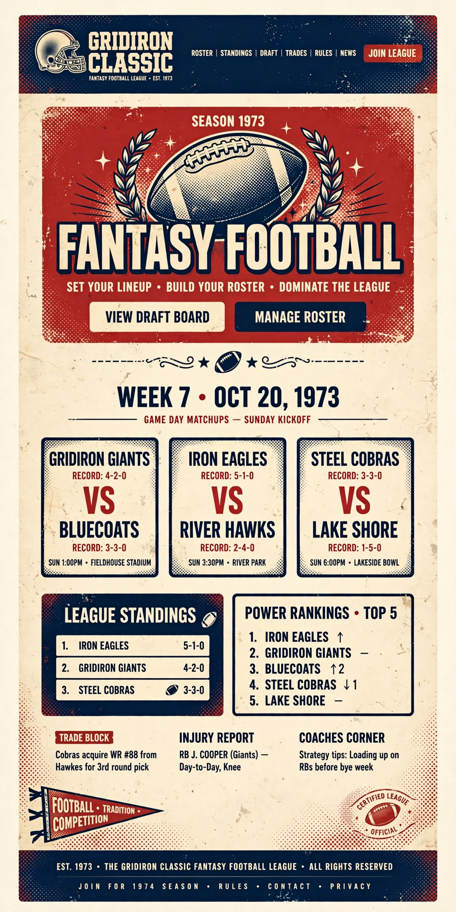
The overall look: aged paper, blocky collegiate type, vintage football illustrations.
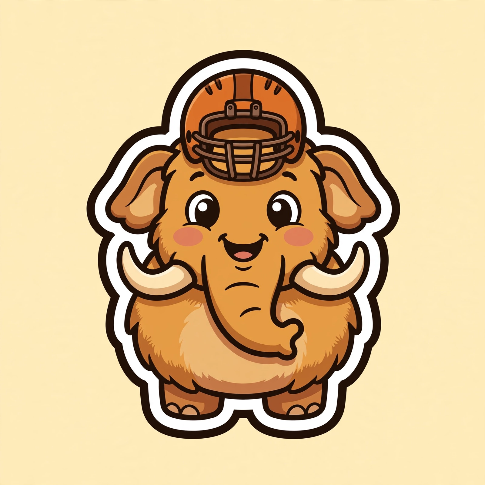
Team mascot style: bold chunky sticker mammoth with thick outlines.
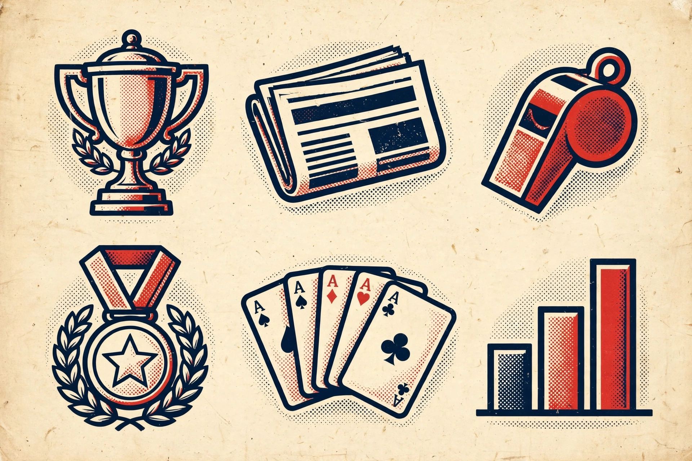
Icon set: vintage poster icons with halftone shading — trophy, newsletter, whistle, medal, draft cards, standings chart.
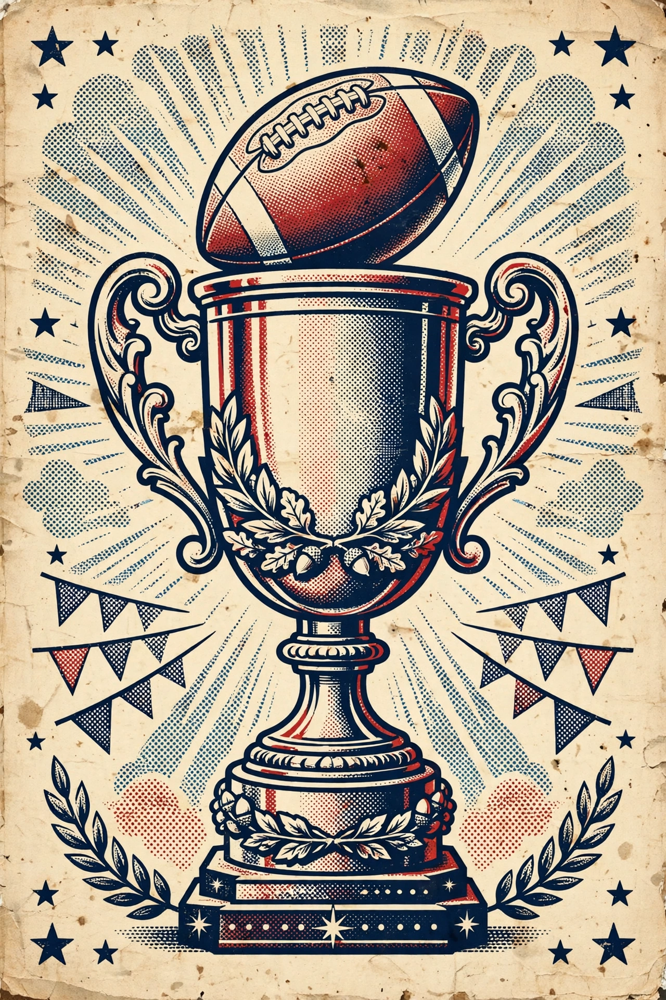
Championship trophy: bold vintage trophy art with halftone dots.
How the home page is arranged — works with any theme above.
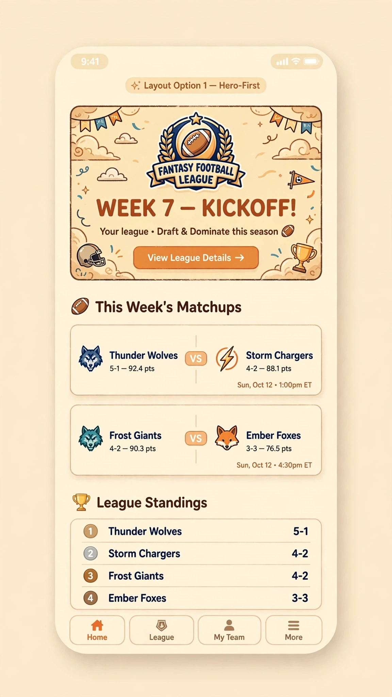
Big illustrated hero banner up top, then this week's matchups, then standings.
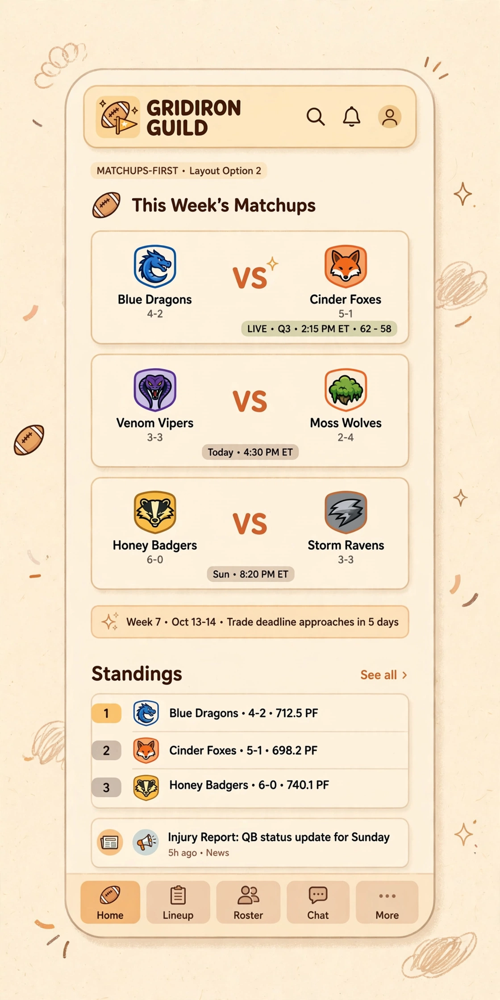
Compact header, this week's matchups immediately, standings and news below. Gets to the action fastest.